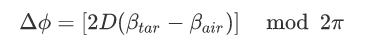
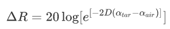
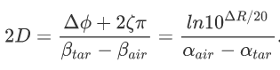
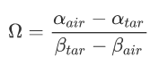
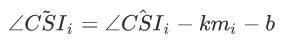
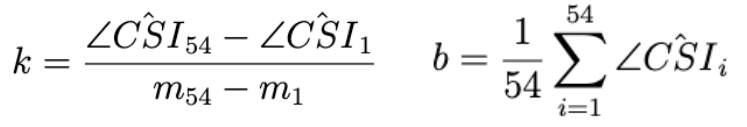

Data Processing
Parameterizing
Our Liquid Identifier is based on the fact that when signal travels through different materials, its phase and received signal strangth (RSS) change accordingly. In another word, the signal phase and RSS changes can help identify different materials when parameterized properly.
Phase Changes
The wavelength of signal changes when penetrating different maetrials due to obsortion. However, the frequency will not change according to K Cheng David (1983). We can expect a phase change when different materials are placed between the transmitter and receiver. In our experiment set-up, we first measure the phase of air, and then measure the phase when target material is in place. The phases are denoted as $\phi_{air}$ and $\phi_{tar}$, respectively. We also introduce $L$ as the distance along the direct path from transmitter to receiver. The phase change $\Delta \phi = \phi_{tar} - \phi_{air}$ will be given as follows, where $\beta = \frac{2\pi}{\lambda}$ is defined as the signal's phase constant in the material.

RSS Changes
We can also expect signal strangth changes when we place different material between the tansmitter and receiver, specifically an amplitude attenuation. Similarly, we denote $R_{air}$ and $R_{tar}$ as the RSS of air and target material, respectively. The change can be expressed as $ \Delta R = R_{tar} - R_{air}$. Given $\alpha_{air}$ and $\alpha_{tar}$ as the attenuation constant of the air and the target material, correspondingly, we express the RSS change as follows.

Feature Extraction
However, the aforementioned changes are related to the propagation distance $D$, and it will not be robust for the system if we are required to constantly measeure this value everytime. We intend to find a parameter that eliminates the effect of $D$ and use tthe new feature to identify our material. First, we try to extract the information that are not related to $D$ from the expression of $\Delta \phi$ and $\Delta R$, where $\zeta=0$ for relatively small objects.

Then we can define a parameter $\Omega$ to represent our feature.

Denoising
The information we received from the system has several configuration that is useful to our feature extraction. The rssi column contains the received signal strength of each read, and the CSI column contains channel state information, which can be extracted as phase information.
We denote the subcarrier $i$'s measured phase as $\angle\hat{CSI}{i}$. We can express it using the following equation, where $\angle CSI{i}$ is the real phase, $Z$ is the measurement noise, $\Delta t$ is the time lag, $\beta$ is the some offsets, $m_i$ is the subcarrier index and $N$ is the Fast Fourier Transformation (FFT) size.

The calibrated phase can be expressed as

After denoising, the phase information can be used properly